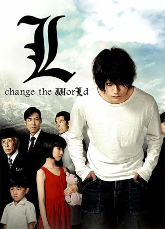

#3231 Death Note: L Change the World
 gesehen am 08.03.2016
gesehen am 08.03.2016
 
 IMDB-Wertung: 6.2 / 10
IMDB-Wertung: 6.2 / 10  Metascore: 0
Metascore: 0 
Nach seinem epischen Kampf mit Kira in Death Note wartet auf den jugendlichen Meisterdetektiv "L" eine neue Aufgabe. Eine Gruppe Terroristen um die Umweltaktivistin Dr. Kujo plant einen globalen Anschlag mit einem Killervirus. Die Schülerin Maki trägt diesen künstlich geschaffenen Virus schon in sich und wendet sich an "L", damit er die drohende Katastrophe abwenden kann. Doch um die Welt zu retten bleibt dem Genie nicht viel Zeit, denn schließlich hat er nur noch 23 Tage zu leben...
Jahr: 2008
Dauer: 128 Minuten
FSK: 16
Land: Japan Studio: 4Digital AsiaTonspuren:
Untertitel: Deutsch,
Auflösung: 1080p (1920x1040) Größe: 10158 MB
Genre: Thriller, Drama, Krimi
Regisseur: Hideo Nakata
Drehbuch: Tsugumi Ôba, Takeshi Obata, Hirotoshi Kobayashi, Kiyomi Fujii
Soundtrack: Kenji Kawai
Darsteller:
Datei: X:\HD-Eastern-Collections\Death Note\Death Note L Change the World (2008, FSK16, 1920x1040).mkv seit 19.02.2016
Festplatte: HD Eastern+Western
 Es gibt insgesamt 7 Filme in der Gruppe 'HD-Eastern-Collections\Death Note'
Es gibt insgesamt 7 Filme in der Gruppe 'HD-Eastern-Collections\Death Note'